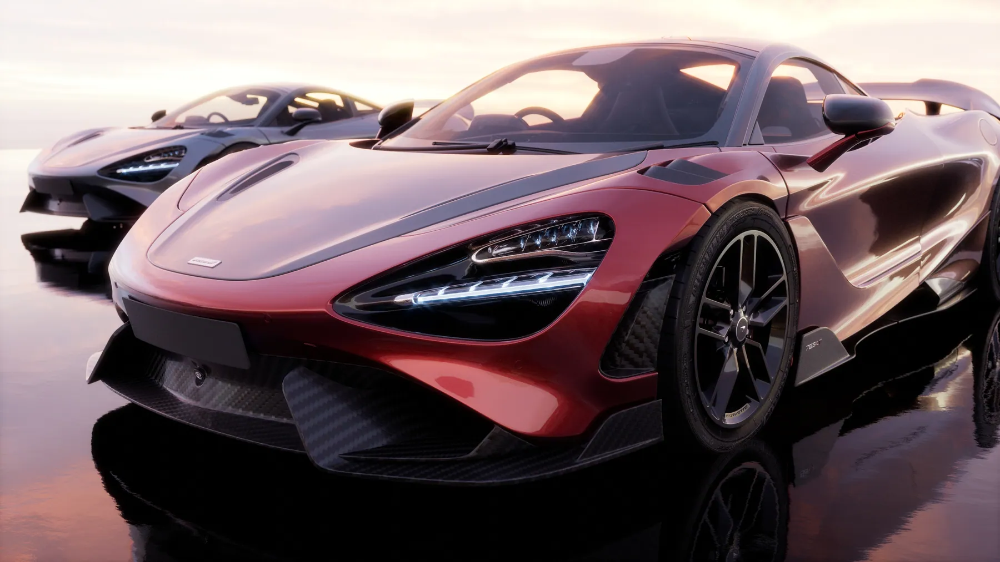
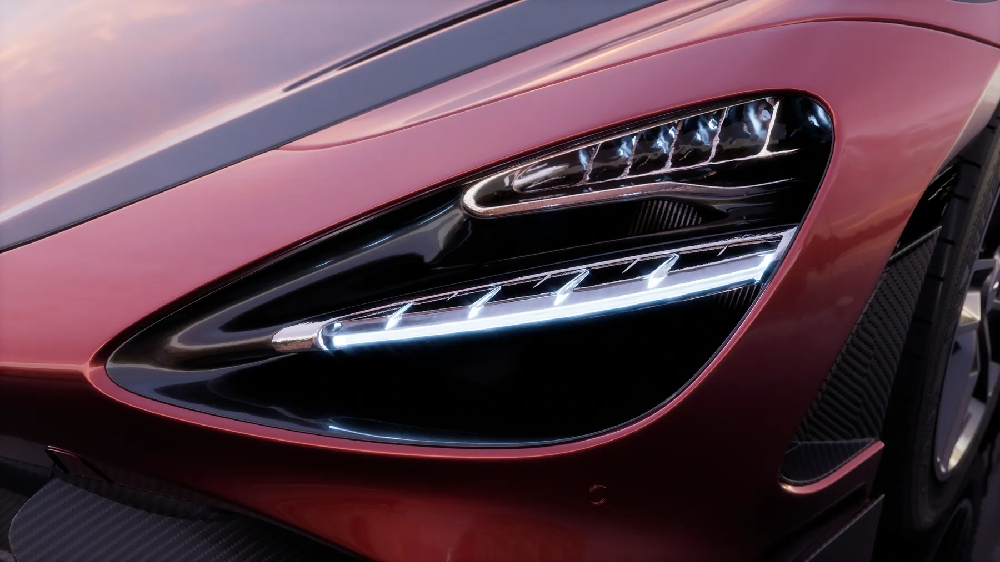
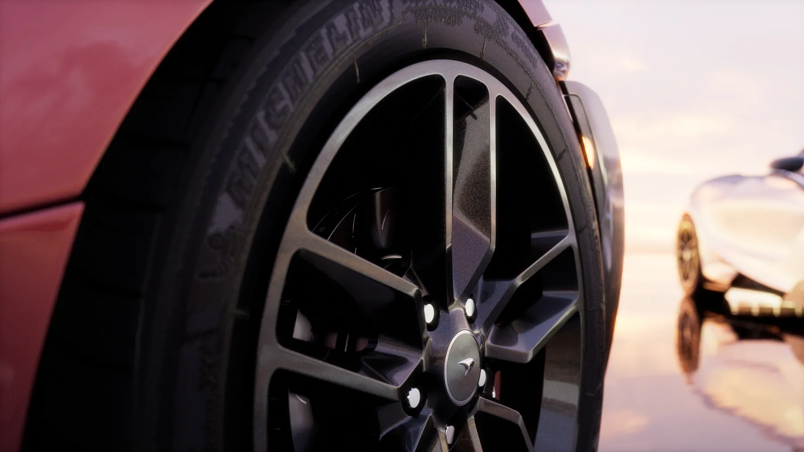

Dự án · Dự án của studio · 2024
McLaren 765LT: ba xe trên mặt nước
Ba chiếc 765LT đứng trên một mặt nước phẳng lì lúc hoàng hôn. Bối cảnh gần như trống rỗng: chỉ có trời, nước và ba chiếc xe. Khi không có gì để nhìn ngoài chiếc xe thì mọi lỗi trên thân vỏ đều lộ, nên đây là bài tập tốt nhất cho phần bề mặt.
Bài toán
Ba thứ khó nhất
Bối cảnh trống thì không giấu được gì
Không có cây, không có toà nhà, không có gì để che một mảng bề mặt chưa đạt. Đường cong thân xe phải liền mạch từ mũi tới đuôi, vì ánh phản chiếu của trời sẽ vẽ ra ngay chỗ gãy.
Ba màu sơn dưới cùng một đèn
Đen, đỏ và trắng phản ứng với ánh sáng hoàng hôn theo ba kiểu khác nhau. Chỉnh cho cả ba cùng đẹp trong một khung hình khó hơn chỉnh từng chiếc một.
Mặt nước phản chiếu phải đúng độ
Phản chiếu quá nét thì thành gương và trông giả, quá mờ thì xe như lơ lửng. Độ nhám của mặt nước là thông số mất nhiều lần thử nhất.
Hình ảnh
Từng cảnh, và lý do


Cách làm
Bốn bước
Sửa bề mặt trước khi sửa vật liệu
Bật chế độ kiểm tra phản chiếu trên thân xe trắng trơn, tìm chỗ gãy rồi vuốt lại. Việc này làm trước, vì sơn bóng chỉ khuếch đại lỗi hình chứ không che được.
Một bầu trời duy nhất
Cả bộ dùng chung một nguồn sáng môi trường. Đổi trời giữa chừng là ba chiếc xe lập tức trông như chụp ở ba nơi.
Thử ba màu cùng lúc
Đặt ba chiếc cạnh nhau ngay từ bản render nháp, thay vì chỉnh từng màu riêng rồi ghép. Sai lệch giữa chúng chỉ thấy được khi đứng cạnh nhau.
Cận cảnh làm sau cùng
Chỉ dựng chi tiết cho phần lọt khung của từng shot macro, khi bố cục toàn cảnh đã chốt.
Muốn làm được shot như thế này?
Đây là đúng những kỹ năng trong lộ trình LXAM Academy, dựng hình, ánh sáng, render tách lớp, dựng phim. Học bằng dự án thật, có người sửa bài.